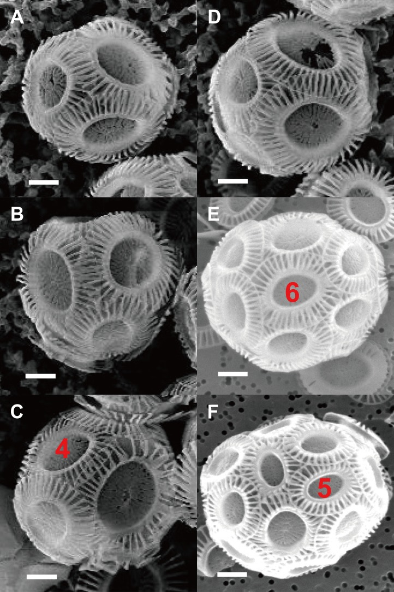

coccosphere
An external cell covering of a coccolithophore assembled from individual mineralized scales called coccoliths. Its organization varies among taxa and cell states; the covering is distinct from a single coccolith and from the intracellular vesicle in which a coccolith forms. [DOI:10.1111/nph.15272]

NCBITaxon:2903) · Kai Xu, David Hutchins and Kunshan Gao; Coccolith arrangement follows Eulerian mathematics in the coccolithophore Emiliania huxleyi; PeerJ (2018), DOI:10.7717/peerj.4608; CC BY 4.0, via PubMed Central · CC_BY_4_0 · source: PMC PMC5896503.1 fig-2 · DOI:10.7717/peerj.4608Has part: coccolith (cellstructuremech:coccolith)
Components
| Component | Type | Part of / acts on | Grounding | Genes | Stoichiometry | Essential | Role |
|---|---|---|---|---|---|---|---|
| calcite | Small molecule | part of | CHEBI:46719 | UNKNOWN | Mineral material of the coccolith scales assembled into the covering.
| ||
| coccosphere-associated organic matrix | Other | part of | Reviewed label only (reviewed name; no accession asserted) | UNKNOWN | In Coccolithus braarudii, a structured polysaccharide-rich organic layer contributes to organization of the coccolith covering. Its molecular composition and necessity for assembly are not established here.
|
Canonical examples
NCBITaxon:2903Emiliania huxleyi — Calcifying strain CS-369. SEM characterizes coccolith arrangement in coccospheres from cultures pooled across light and CO2 conditions. Whole-sphere plate numbers are estimated from visible interlocked plates under a uniform-distribution assumption, not counted independently in three dimensions. [DOI:10.7717/peerj.4608]NCBITaxon:221442Coccolithus braarudii — Strain PLY182g, called Coccolithus pelagicus subsp. braarudii in older work. Time-lapse microscopy follows rearrangement of the covering during division; calcification-disruption experiments and fluorescence microscopy distinguish daughter-cell separation defects from an inability to complete initial cytokinesis. [DOI:10.1111/nph.15272]
Functions
- external cell covering — Coccolith scales collectively cover the cell exterior. The spatial arrangement and integrity of this covering vary with species, cell state and experimental perturbation.
DOI:10.7717/peerj.4608Figure 2 directly shows interlocking scale coverings of E. huxleyi; mathematical topology analysis remains specific to the study assumptions and measured geometry.DOI:10.1111/nph.15272Figure 5 time-lapse imaging shows flexible rearrangement of C. braarudii coccoliths as the cell divides while retaining coverage.
- support of daughter-cell separation — In tested Coccolithus braarudii cultures, an intact coccosphere supports separation of daughter cells. Disruption of the covering during Ge or HEDP treatment is associated with persistent cell pairs after completed cytokinesis; this is not asserted for every coccolithophore or calcification perturbation.
DOI:10.1111/nph.15272Results and Figures 7-9 combine treatment time courses, time-lapse imaging, nuclear and membrane staining, and in situ decalcification controls. Low-Ca growth inhibition does not produce the same paired-cell phenotype. Possible additional treatment effects and the precise adhesion mechanism remain unresolved.
Discussions
- CURATION_TODO (RESOLVED): Keep the whole coccosphere distinct from an individual coccolith, its formation vesicle and the organic matrix alone. A covering assembled from mineral scales, a scale and a membrane-bounded formation compartment have different physical boundaries.
- CURATION_TODO (OPEN): Resolve the chemistry, distribution and assembly requirement of the coccosphere-associated organic matrix. A patterned lectin-positive layer does not identify an exact polymer, protein or receptor, nor prove a universal composition.
- CURATION_TODO (OPEN): Resolve how layer definitions, coccolith geometry and cell state affect coccosphere architecture across taxa. A topology model fitted to one strain does not determine universal plate counts, layer counts or cellular sensing machinery.
- CURATION_TODO (OPEN): Distinguish species-specific daughter-separation effects from universal growth, protection or photosynthesis functions. Different calcification perturbations and different species need not have the same cellular consequences.
- CURATION_TODO (RESOLVED): Do not infer that every coccolith in a covering was produced by the covered cell. A structural part can be acquired from the surrounding medium rather than synthesized by its present host.
- CURATION_TODO (RESOLVED): Do not import the intracellular division microtubule network as a constituent of the extracellular covering. Concurrent cellular rearrangements do not establish shared structural membership.
Evidence
DOI:10.7717/peerj.4608Xu, Hutchins and Gao (2018), PeerJ. Primary Methods, SEM architecture Results, Figure 2, count/geometry assumptions and assembly discussion read. Separates observed scale arrangement from simulated topology and hypothetical cellular control.DOI:10.1111/nph.15272Walker et al. (2018), New Phytologist. Culture and perturbation Methods, time-lapse/fluorescence/SEM Methods, division and organic-layer Results, Figures 5-9 and Discussion read. Supports species- and treatment-scoped covering organization and daughter-separation observations.DOI:10.1126/sciadv.adc8728Johns et al. (2023), Science Advances. Primary Results and culture/isolation/adsorption Methods read. Cells can acquire free coccoliths, and xenospheres can mix morphotypes or scales from different species; possession of an attached scale does not prove that its host produced it.GO:0030312Verified external encapsulating structure is a broader cellular-component class for structures outside the plasma membrane surrounding the cell, not an exact coccosphere identity.
Curation history
2026-10-03T18:57:33Zcodex · CREATED_RECORD — Scaffolded by scripts/new_record.py2026-10-03T18:59:52Zcodex · EXPANDED_RECORD — Added whole-covering identity and coccolith parthood, verified calcite, label-only organic matrix, two species examples, scoped covering/separation roles, geometry and mechanism limits, and inspected CC BY 4.0 SEM Figure 2 with complete source-specific attribution.2026-10-03T19:00:38Zcodex · CLARIFIED_COMPONENT_BOUNDARY — Recorded the resolved intracellular-cytoskeleton exclusion separately from the open extracellular matrix-composition question.